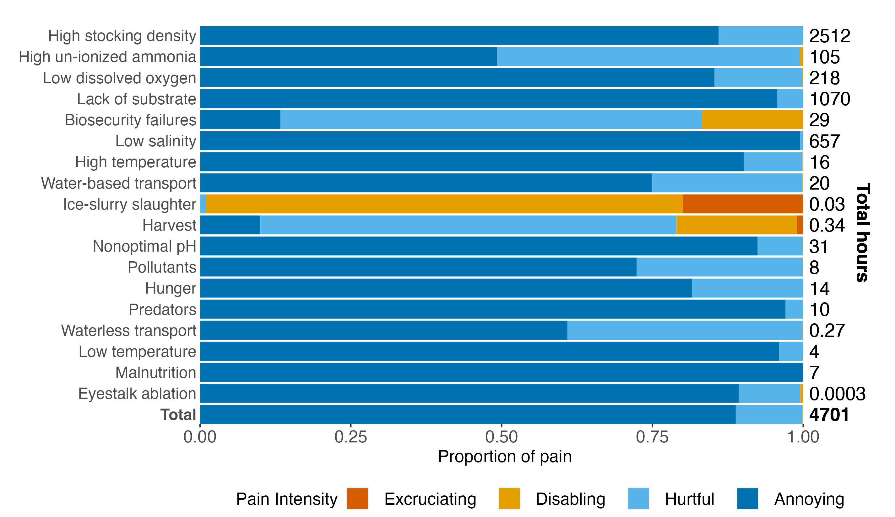

# load disabling-equivalent estimates
totals_files <- list.files(path="../results/full_results", pattern='\\.csv$', full.names=TRUE)
totals_csv <- lapply(totals_files, read.csv,)
names(totals_csv) <- gsub(".csv","",
list.files("../results/full_results", pattern='\\.csv$', full.names = FALSE), fixed = TRUE)
list2env(totals_csv, globalenv())Results
Now we put the results from each welfare threat into one table.
We calculate the total time in disabling-equivalent pain, using all of the 100,000 simulations. Then, we calculate the 5th, 50th, and 95th percentiles for the total time in pain.
# putting all the disabling-equivalent estimates (100,000 for each threat) into one data frame
totals<-data.frame(Eyestalk_ablation = ablation[,5],
`High_un-ionized_ammonia` = ammon[,5],
High_stocking_density=dens[,5],
Biosecurity_failures=disease[,5],
Harvest=harvest[,5],
High_temperature=hitemp[,5],
Hunger=hunger[,5],
Low_dissolved_oxygen=lowdo[,5],
Low_temperature=lowtemp[,5],
Malnutrition=malnu[,5],
Waterless_transport=nowater[,5],
Nonoptimal_pH=ph[,5],
Pollutants=pollute[,5],
Predators=pred[,5],
Low_salinity=salin[,5],
`Ice-slurry_slaughter`=slaught[,5],
Lack_of_substrate=subst[,5],
`Water-based_transport`=water[,5])
# summing across rows to get 100,000 estimates of the total disabling-equivalent hours
totals <- totals %>%
adorn_totals("col")
# finding the 5th, 50th, and 95th percentiles and mean
totals_summary<-as.data.frame(cbind(welfare_threat="Total", round(rbind(
quantile(x=totals$Total, probs = c(.05, .50, .95))), 10),
"Mean" = mean(totals$Total)))
totals_summary[,2:5]<-as.numeric(totals_summary[,2:5])
totals_summary welfare_threat 5% 50% 95% Mean
1 Total 27.63739 115.0953 355.836 157.1543## Results
#Putting all the outputs into a table:
comparison_table<-rbind(hunger_summary, malnu_summary, lowdo_summary, hitemp_summary, lowtemp_summary, salin_summary, ph_summary, ammon_summary, pollute_summary, density_summary, subst_summary, pred_summary, ablation_summary, nowater_summary, water_summary, harvest_summary, slaught_summary, disease_summary)
colnames(comparison_table)<-c("welfare_threat","5%", "50%", "95%", "Mean")
# keeping only the disabling-equivalent pain estimations, which occur every 5th row
diseq_results<-comparison_table %>%
dplyr::filter(str_detect(welfare_threat, "Disabling-Equivalent"))
# arranging the rows in descending order and adding a total row.
results<-as.data.frame(diseq_results, rownames=TRUE) %>%
arrange(desc(Mean)) %>%
rbind(totals_summary) %>%
column_to_rownames("welfare_threat") %>%
mutate(`5%` = signif(`5%`, pmax(2,trunc(log10(`5%`)+1))), # rounding all results to 2 significant figure, except those with more than two significant digits before the decimal point (log10 counts the digits)
`50%` = signif(`50%`, pmax(2,trunc(log10(`50%`)+1))),
`95%` = signif(`95%`, pmax(2,trunc(log10(`95%`)+1))),
Mean = signif(Mean, pmax(2,trunc(log10(Mean)+1))),
`Mean (minutes)`=signif(Mean*60, pmax(2,trunc(log10(Mean*60)+1)))) %>% # displaying small results in minutes
mutate(`Mean (minutes)` = ifelse(Mean>1, "—", `Mean (minutes)`)) %>% # removing display of large results in minutes
mutate(across(where(is.numeric), as.character))
# cleaning up the row names
rownames(results)<-gsub("Disabling-Equivalent_","", rownames(results))
rownames(results)<-gsub("_"," ", rownames(results))
# print results
show_table(results) %>%
row_spec(19, bold = T, background = "lightgrey")| 5% | 50% | 95% | Mean | Mean (minutes) | |
|---|---|---|---|---|---|
| High stocking density | 5.2 | 49 | 112 | 64 | — |
| High un-ionized ammonia | 0.75 | 8.1 | 108 | 30 | — |
| Low dissolved oxygen | 1.8 | 5.3 | 57 | 18 | — |
| Lack of substrate | 1.2 | 11 | 24 | 13 | — |
| Biosecurity failures | 2.9 | 7.2 | 24 | 11 | — |
| Low salinity | 0.25 | 2.7 | 14 | 6.9 | — |
| High temperature | 0.034 | 0.39 | 18 | 3.9 | — |
| Water-based transport | 0.097 | 0.62 | 8.5 | 3.6 | — |
| Ice-slurry slaughter | 0.27 | 2.7 | 7.2 | 3 | — |
| Harvest | 0.11 | 0.96 | 6.3 | 1.8 | — |
| Nonoptimal pH | 0.043 | 0.42 | 1.9 | 1.4 | — |
| Pollutants | 0.025 | 0.26 | 2.4 | 0.95 | 57 |
| Hunger | 0.089 | 0.3 | 0.81 | 0.38 | 23 |
| Predators | 0.0072 | 0.075 | 0.4 | 0.28 | 17 |
| Waterless transport | 0.0032 | 0.012 | 0.13 | 0.052 | 3.1 |
| Low temperature | 0.0029 | 0.031 | 0.12 | 0.043 | 2.6 |
| Malnutrition | 0.0094 | 0.033 | 0.095 | 0.04 | 2.4 |
| Eyestalk ablation | 0.0000026 | 0.0000066 | 0.00002 | 0.000012 | 0.00072 |
| Total | 28 | 115 | 356 | 157 | — |
We also want to see the results broken down by pain type.
annoying_totals<-data.frame(Eyestalk_ablation = ablation[,1],
`High_un-ionized_ammonia` = ammon[,1],
High_stocking_density=dens[,1],
Biosecurity_failures=disease[,1],
Harvest=harvest[,1],
High_temperature=hitemp[,1],
Hunger=hunger[,1],
Low_dissolved_oxygen=lowdo[,1],
Low_temperature=lowtemp[,1],
Malnutrition=malnu[,1],
Waterless_transport=nowater[,1],
Nonoptimal_pH=ph[,1],
Pollutants=pollute[,1],
Predators=pred[,1],
Low_salinity=salin[,1],
`Ice-slurry_slaughter`=slaught[,1],
Lack_of_substrate=subst[,1],
`Water-based_transport`=water[,1])
# summing across rows to get 100,000 estimates of the total disabling-equivalent hours
annoying_totals <- annoying_totals %>%
adorn_totals("col")
# finding the 5th, 50th, and 95th percentiles and mean
annoying_totals_summary<-as.data.frame(cbind(welfare_threat="Annoying", round(rbind(
quantile(x=annoying_totals$Total, probs = c(.05, .50, .95))), 10),
"Mean" = mean(annoying_totals$Total)))
annoying_totals_summary[,2:5]<-as.numeric(annoying_totals_summary[,2:5])
annoying_totals_summary welfare_threat 5% 50% 95% Mean
1 Annoying 682.4109 4658.133 6666.72 4174.851## Hurtful totals
hurtful_totals<-data.frame(Eyestalk_ablation = ablation[,2],
`High_un-ionized_ammonia` = ammon[,2],
High_stocking_density=dens[,2],
Biosecurity_failures=disease[,2],
Harvest=harvest[,2],
High_temperature=hitemp[,2],
Hunger=hunger[,2],
Low_dissolved_oxygen=lowdo[,2],
Low_temperature=lowtemp[,2],
Malnutrition=malnu[,2],
Waterless_transport=nowater[,2],
Nonoptimal_pH=ph[,2],
Pollutants=pollute[,2],
Predators=pred[,2],
Low_salinity=salin[,2],
`Ice-slurry_slaughter`=slaught[,2],
Lack_of_substrate=subst[,2],
`Water-based_transport`=water[,2])
# summing across rows to get 100,000 estimates of the total disabling-equivalent hours
hurtful_totals <- hurtful_totals %>%
adorn_totals("col")
# finding the 5th, 50th, and 95th percentiles and mean
hurtful_totals_summary<-as.data.frame(cbind(welfare_threat="Hurtful", round(rbind(
quantile(x=hurtful_totals$Total, probs = c(.05, .50, .95))), 10),
"Mean" = mean(hurtful_totals$Total)))
hurtful_totals_summary[,2:5]<-as.numeric(hurtful_totals_summary[,2:5])
hurtful_totals_summary welfare_threat 5% 50% 95% Mean
1 Hurtful 111.2306 562.6626 841.3868 519.7692## Disabling
disabling_totals<-data.frame(Eyestalk_ablation = ablation[,3],
`High_un-ionized_ammonia` = ammon[,3],
High_stocking_density=dens[,3],
Biosecurity_failures=disease[,3],
Harvest=harvest[,3],
High_temperature=hitemp[,3],
Hunger=hunger[,3],
Low_dissolved_oxygen=lowdo[,3],
Low_temperature=lowtemp[,3],
Malnutrition=malnu[,3],
Waterless_transport=nowater[,3],
Nonoptimal_pH=ph[,3],
Pollutants=pollute[,3],
Predators=pred[,3],
Low_salinity=salin[,3],
`Ice-slurry_slaughter`=slaught[,3],
Lack_of_substrate=subst[,3],
`Water-based_transport`=water[,3])
# summing across rows to get 100,000 estimates of the total disabling-equivalent hours
disabling_totals <- disabling_totals %>%
adorn_totals("col")
# finding the 5th, 50th, and 95th percentiles and mean
disabling_totals_summary<-as.data.frame(cbind(welfare_threat="Disabling", round(rbind(
quantile(x=disabling_totals$Total, probs = c(.05, .50, .95))), 10),
"Mean" = mean(disabling_totals$Total)))
disabling_totals_summary[,2:5]<-as.numeric(disabling_totals_summary[,2:5])
disabling_totals_summary welfare_threat 5% 50% 95% Mean
1 Disabling 2.737285 5.540913 10.13035 5.882116## Ecruciating
excruciating_totals<-data.frame(Eyestalk_ablation = ablation[,4],
`High_un-ionized_ammonia` = ammon[,4],
High_stocking_density=dens[,4],
Biosecurity_failures=disease[,4],
Harvest=harvest[,4],
High_temperature=hitemp[,4],
Hunger=hunger[,4],
Low_dissolved_oxygen=lowdo[,4],
Low_temperature=lowtemp[,4],
Malnutrition=malnu[,4],
Waterless_transport=nowater[,4],
Nonoptimal_pH=ph[,4],
Pollutants=pollute[,4],
Predators=pred[,4],
Low_salinity=salin[,4],
`Ice-slurry_slaughter`=slaught[,4],
Lack_of_substrate=subst[,4],
`Water-based_transport`=water[,4])
# summing across rows to get 100,000 estimates of the total disabling-equivalent hours
excruciating_totals <- excruciating_totals %>%
adorn_totals("col")
# finding the 5th, 50th, and 95th percentiles and mean
excruciating_totals_summary<-as.data.frame(cbind(welfare_threat="Excruciating", round(rbind(
quantile(x=excruciating_totals$Total, probs = c(.05, .50, .95))), 10),
"Mean" = mean(excruciating_totals$Total)))
excruciating_totals_summary[,2:5]<-as.numeric(excruciating_totals_summary[,2:5])
excruciating_totals_summary welfare_threat 5% 50% 95% Mean
1 Excruciating 0.006992051 0.03299267 0.4935622 0.1394545allpain_totals<-data.frame(annoying_totals$Total,
hurtful_totals$Total,
disabling_totals$Total,
excruciating_totals$Total)
# summing across rows to get 100,000 estimates of the total disabling-equivalent hours
allpain_totals <- allpain_totals %>%
mutate(Total=rowSums(allpain_totals))
# finding the 5th, 50th, and 95th percentiles and mean
allpain_totals_summary<-as.data.frame(cbind(welfare_threat="Total (pain categories summed)", round(rbind(
quantile(x=allpain_totals$Total, probs = c(.05, .50, .95))), 10),
"Mean" = mean(allpain_totals$Total)))
allpain_totals_summary[,2:5]<-as.numeric(allpain_totals_summary[,2:5])
allpain_totals_summary welfare_threat 5% 50% 95% Mean
1 Total (pain categories summed) 803.1153 5269.674 7403.425 4700.642total_byintensity<-rbind(annoying_totals_summary, hurtful_totals_summary,
disabling_totals_summary, excruciating_totals_summary)
percent<-total_byintensity %>%
mutate(as.percent=(Mean/sum(Mean))*100)
paintype_results<-plyr::rbind.fill(percent, allpain_totals_summary)
show_table(paintype_results)| welfare_threat | 5% | 50% | 95% | Mean | as.percent |
|---|---|---|---|---|---|
| Annoying | 682.4108717 | 4658.1333297 | 6666.7204544 | 4174.8509723 | 88.8144891 |
| Hurtful | 111.2305727 | 562.6625725 | 841.3868106 | 519.7692294 | 11.0574099 |
| Disabling | 2.7372845 | 5.5409133 | 10.1303455 | 5.8821155 | 0.1251343 |
| Excruciating | 0.0069921 | 0.0329927 | 0.4935622 | 0.1394545 | 0.0029667 |
| Total (pain categories summed) | 803.1153404 | 5269.6744350 | 7403.4249741 | 4700.6417718 | NA |
results_byintensity<-comparison_table %>%
dplyr::filter(!str_detect(welfare_threat, "Disabling-Equivalent")) %>%
separate_wider_delim(welfare_threat, "_", names=c("pain_type", "welfare_threat"))
percent_byintensity<-results_byintensity %>%
group_by(welfare_threat) %>%
mutate(percent=Mean/sum(Mean))
percent_total<-percent_byintensity %>%
group_by(welfare_threat) %>%
mutate(total=sum(Mean)) %>%
mutate_at(.vars = vars(total), .funs = ~ case_when(
abs(.x) > 1 ~ round(.x, digits = 0), TRUE ~ round(.x, digits = 4))) %>%
mutate_at(.vars = vars(total), .funs = ~ case_when(
abs(.x) > 0.001 ~ round(.x, digits = 2), TRUE ~ round(.x, digits = 4)))
# total_by.intensity<-reframe(results_byintensity, .by=pain_type,
# total=sum(Mean),
# total.95=sum(`95%`),
# total.50=sum(`50%`),
# total.5=sum(`5%`)) %>%
# mutate(percent.total=total/sum(total))
percent_overall<-data.frame(
pain_type=c("Annoying", "Hurtful", "Disabling", "Excruciating"),
welfare_threat = rep("Total", 4),
`5%`=total_byintensity$`5%`,
`50%`=total_byintensity$`50%`,
`95%`=total_byintensity$`95%`,
Mean=total_byintensity$Mean,
percent=total_byintensity$Mean/sum(total_byintensity$Mean),
total=rep(sum(total_byintensity$Mean), 4))
colnames(percent_overall)<-colnames(percent_total)
results_paintype<-rbind(percent_total, percent_overall)
results_paintype$welfare_threat<-gsub("subst", "Lack of substrate", results_paintype$welfare_threat)
results_paintype$welfare_threat<-gsub("dens", "High stocking density", results_paintype$welfare_threat)
results_paintype$welfare_threat<-gsub("salin", "Low salinity", results_paintype$welfare_threat)
results_paintype$welfare_threat<-gsub("ammon", "High un-ionized ammonia", results_paintype$welfare_threat)
results_paintype$welfare_threat<-gsub("ph", "Nonoptimal pH", results_paintype$welfare_threat)
results_paintype$welfare_threat<-gsub("lowDO", "Low dissolved oxygen", results_paintype$welfare_threat)
results_paintype$welfare_threat<-gsub("hunger", "Hunger", results_paintype$welfare_threat)
results_paintype$welfare_threat<-gsub("hitemp", "High temperature", results_paintype$welfare_threat)
results_paintype$welfare_threat<-gsub("malnu", "Malnutrition", results_paintype$welfare_threat)
results_paintype$welfare_threat<-gsub("nowater", "Waterless transport", results_paintype$welfare_threat)
results_paintype$welfare_threat<-gsub("water", "Water-based transport" , results_paintype$welfare_threat)
results_paintype$welfare_threat<-gsub("pollute", "Pollutants", results_paintype$welfare_threat)
results_paintype$welfare_threat<-gsub("harvest", "Harvest", results_paintype$welfare_threat)
results_paintype$welfare_threat<-gsub("slaught", "Ice-slurry slaughter", results_paintype$welfare_threat)
results_paintype$welfare_threat<-gsub("ablation", "Eyestalk ablation", results_paintype$welfare_threat)
results_paintype$welfare_threat<-gsub("pred", "Predators", results_paintype$welfare_threat)
results_paintype$welfare_threat<-gsub("lowtemp", "Low temperature", results_paintype$welfare_threat)
results_paintype$welfare_threat<-gsub("disease", "Biosecurity failures", results_paintype$welfare_threat)
results_paintype$welfare_threat<-factor(results_paintype$welfare_threat,
levels=c(rownames(results)))
results_paintype$pain_type<-factor(results_paintype$pain_type, levels=c("Excruciating", "Disabling", "Hurtful", "Annoying"))Now we can plot the results:
results_paintype$welfare_threat<-factor(results_paintype$welfare_threat, levels=c(unique(rownames(results))))
results_diseq<-results %>%
rownames_to_column(var="welfare_threat")
results_diseq$welfare_threat<-factor(results_diseq$welfare_threat,
levels=c(unique(rownames(results))))
results_diseq$Pain<-rep("Disabling-equivalent")
results_diseq$Pain<-factor(results_diseq$Pain, levels=c(
"Disabling-equivalent", "Excruciating", "Disabling", "Hurtful", "Annoying"))
# absolute values
paintype.plot<-ggplot(results_paintype) +
geom_pointrange(aes(y=fct_rev(welfare_threat), x=Mean, xmin=`5%`, xmax=`95%`, color=pain_type),
position = position_dodge2(width = 1, padding = 2),
stat="identity", show.legend=FALSE,
size=1, linewidth=1) +
facet_wrap(~fct_rev(pain_type), scales="free_x", ncol=3) +
scale_color_manual(values=c("#D55E00", "#E69F00", "#56B4E9", "#0072B2")) +
labs(y="", x="Hours", color="Pain intensity") +
theme(axis.title.x = element_text(hjust=0.15),
axis.text=element_text(size=12),
strip.text = element_text(size=13))
diseq.plot<-ggplot(results_diseq) +
geom_pointrange(aes(y=fct_rev(welfare_threat), x=as.numeric(Mean), xmin=as.numeric(`5%`), xmax=as.numeric(`95%`), color=Pain), na.rm=TRUE, position = position_dodge2(width = 1, padding = 2), stat="identity", show.legend = TRUE, size=1, linewidth=1) +
labs(y="", x="Hours", color="Pain intensity ") +
scale_color_manual(values=c(
"gray30", "#D55E00", "#E69F00", "#56B4E9", "#0072B2"), drop=FALSE) +
theme(legend.position="bottom",
legend.text = element_text(
margin = margin(r = 10, l=5, unit = "pt"), size=13),
legend.title=element_text(size=13),
axis.text.y = element_blank(),
axis.text.x=element_text(size=12),
axis.ticks.y=element_blank(),
plot.background = element_blank(),
strip.text = element_text(size=13))+
facet_wrap(~Pain)
layout <- c(
area(t = 1, l = 1, b = 200, r = 220),
area(t = 105, l = 72, b = 200, r = 220)
)
# using the patchwork package to arrange the plots
fig1<-paintype.plot + diseq.plot +
plot_layout(design = layout, guides="collect") & theme(legend.position = 'bottom', plot.caption = element_text(hjust = 0.7, size=12),
plot.margin = unit(c(top=.05,r=.1,b=.05,l=-.4), "cm"))
fig1ggsave(filename="../results/fig1.png", plot=fig1, width=14, height=8.5)We also plot the proportion of pain of each intensity for each welfare threat:
# stacked percentage bars
fig3<-ggplot(results_paintype) +
geom_bar(aes(y=fct_rev(welfare_threat), x=percent, fill=pain_type), position ="stack", stat="identity") +
scale_fill_manual(values=c("#D55E00", "#E69F00", "#56B4E9", "#0072B2")) +
geom_text(aes(y=welfare_threat, x=1.01, label=formatC(total, format="fg"),
hjust=0) , na.rm=TRUE, fontface=c(rep("plain", 72),
rep("bold", 4 )), size=5) +
geom_text(aes(y=12, x=1.1), label=expression(bold('Total hours')),
hjust=0, size=5, lineheight = 0.7, angle=270) +
theme( panel.grid.major = element_line(color="white"),
panel.grid.minor = element_line(colour = "white"),
panel.background = element_rect(fill = "white"),
axis.ticks.y = element_blank(),
axis.text.y = element_text(
face=c( "bold", rep("plain", 18)), size=12, margin = margin(r = 0)),
axis.text.x=element_text(size=13),
axis.title.x=element_text(size=13, hjust=0.425),
legend.position="bottom",
plot.margin=margin(r=1, l=1, t=20),
legend.text=element_text(
margin = margin(r = 10, l=5, unit = "pt"), size=13),
legend.title=element_text(size=13)) +
labs(x="Proportion of pain", y="", fill="Pain Intensity") +
scale_x_continuous(limits=c(0,1.15), expand=c(0,0), breaks = c(0.0, 0.25, 0.5, 0.75, 1)) +
coord_cartesian(xlim=c(0,1.15), clip = 'off') +
scale_y_discrete(expand=c(0,0))
fig3ggsave(filename="../results/fig3.png", plot=fig3, width=9.5, height=5.5)